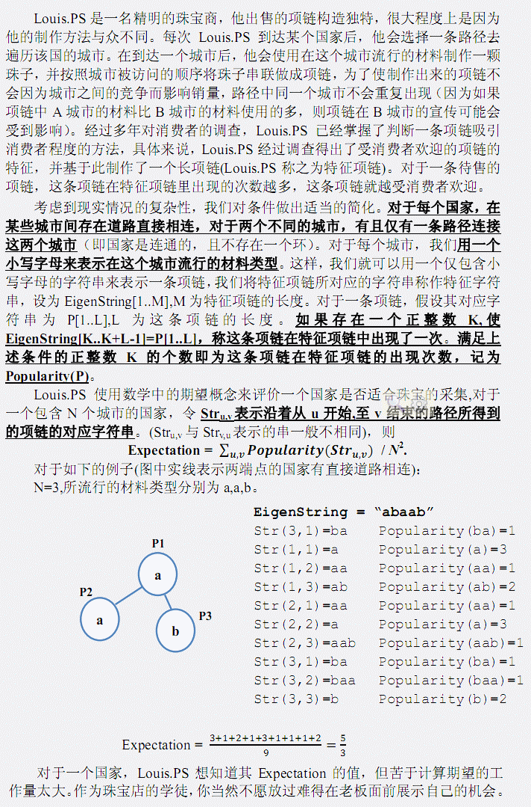

第一行包含两个整数 N,M，表示城市个数及特征项链的长度。 接下来的N-1 行， 每行两个整数 x,y， 表示城市 x 与城市 y 有直接道路相连。城市由1~N进行编号。接下来的一行，包含一个长度为 N，仅包含小写字母的字符串，第 i 位的字符表示在城市 i 流行的原料类型。 最后一行， 包含一个长度为 M， 仅包含小写字母的字符串， 表示特征字符串。

第一行包含两个整数 N,M，表示城市个数及特征项链的长度。 接下来的N-1 行， 每行两个整数 x,y， 表示城市 x 与城市 y 有直接道路相连。城市由1~N进行编号。接下来的一行，包含一个长度为 N，仅包含小写字母的字符串，第 i 位的字符表示在城市 i 流行的原料类型。 最后一行， 包含一个长度为 M， 仅包含小写字母的字符串， 表示特征字符串。
仅包含一个整数,为 N2 * Expectation
3 5
1 2
1 3
aab
abaab
15 【数据规模】 有 20%的数据,满足 M < =ܯ1000； 有 40%的数据,满足ܰN < =8000,M < = ܯ50000； 对于 100%的数据,N,M < =ܰ,ܯ50000
2016.1.1新加数据两组,未重测！·